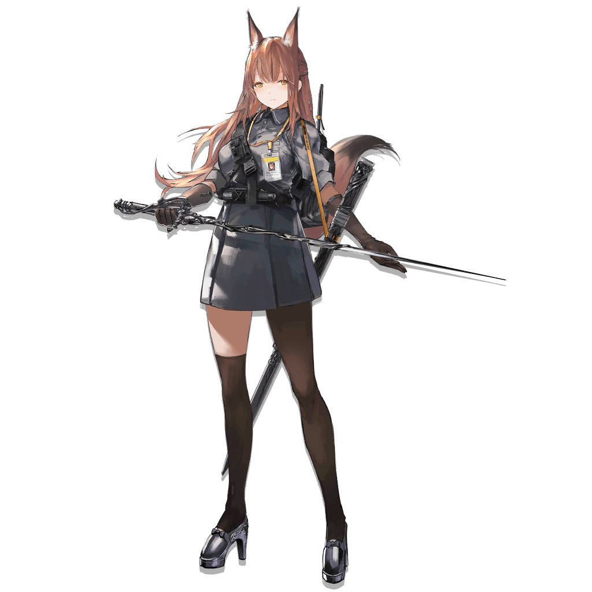

Quotation Si's Ver.

Clinical Analysis
Imaging test for this Operator showed blurry outline of internal organs with visible unusual dark spots.
Unusually high concentration of Originium particles were present in her circulation, indicating signs of
infection and confirming her as infected at this stage.
[Cell-Originium Assimilation] 9%
Operator Franka showed conspicuous symptoms of Oripathy.
[Blood Originium-Crystal Density] 0.34u/L
Infection approaching mid-stage but currently not spreading, condition stable.
Blacksteel, aka. Blacksteel Worldwide, is a contractor whose core service is providing private security services. Headquartered in Columbia, Blacksteel is now riding a crest thanks to the growing business influence of Columbia.
To combat the Originium infection crisis, Blacksteel set up a special unit known as the "Biochemical Protection Response Staff" (BPRS). Operator Franka is a member of this unit tasked with guaranteeing the safety of all Bio Department operations.
Unlike most Blacksteel specialists who are always serious to the point of being dour, Franka seems more light-hearted, progressive, and is even a bit of a prankster--her victims including both enemies and her own colleagues.
No matter the situation she faces, Franka is able to keep calm and persuade others to trust in her calculated words.
For a professional Operator, Franka submitted a relatively truthful personal profile and resume, as well as a standard cooperation agreement, voluntary treatment waiver, and other binding contracts. Based on that, Franka may be accorded the appropriate level of trust.
Franka's combat style is often considered enigmatic and unpredictable, as befitting her peculiar personality. Rather than dealing the most damage, she focuses on making herself come off as "harmless".
Franka's weapon of choice are a rapier and a dagger. She favors a rapier forged from Originium that, when combined with her own Originium Arts, absorbs a huge amount of heat (while still retaining its shape). It is especially effective against targets in heavy metal armor. It is very easy to overlook her light gear and weapons, leading to a gross underestimation of her combat prowess.
On the other hand, the close-up melee style she prefers also can put her in peril. While she may be good enough to end the enemy before her life is threatened, to alleviate concerns, the head of the BPRS project teamed the smart but radical Franka with the level-headed Liskarm, making them a complementary duo in combat.